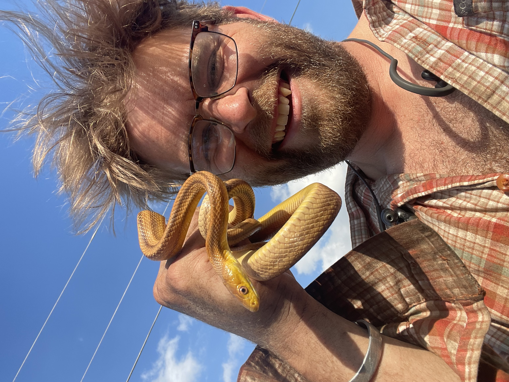

In the Field





I'm an ecologist and biogeochemist. Most of my work is about what limits communities, and what those constraints reveal about how communities are built.
Plants rely on microbial associates to cycle the nutrients essential for life, so the assembly of rhizosphere communities can both control resources belowground and structure communities aboveground. What governs that assembly is usually some form of limitation, and limitation forces trade-offs. There is generally a threshold where the return stops justifying the cost, and that threshold is where the interesting ecology sits.
I use basic science to design applied systems, and applied systems to understand basic science.
Manure is a good way to recycle nutrients and build soil health, but it can carry antibiotic resistance genes into soils and onto crops. Composting should take care of that: it kills pathogens, and it can denature the extracellular DNA those genes sit on. In practice the results are mixed, and my USDA project is about why. There are two likely explanations and both are community ecology. Either the resistance genes stick around because they give their hosts a competitive advantage, or a badly turned pile keeps resources separated in space and time, so poor competitors survive in pockets that better mixing would clear out. Sorting that out gives you a composting protocol. It also tells you how much niche overlap it takes to push a weak competitor out.

I am powerfully motivated to consider issues of both food safety and environmental sustainability in the context of our changing climate. I conduct experimental research to quantify the organism-level mechanisms underlying plant-soil dynamics, and pursue theoretical work that applies these first principles to predict broader community-level patterns and suggest amendments for ecosystem conservation and agricultural management.
My work spans subtropical pastures and wetlands (Florida), tropical forests (Panama, Mexico, China), savannas (Kenya), and temperate forests (northeastern USA). I'm trained in stable isotope mass spectrometry, soil metagenomics, ground-penetrating radar, drone remote sensing, and molecular genetics.